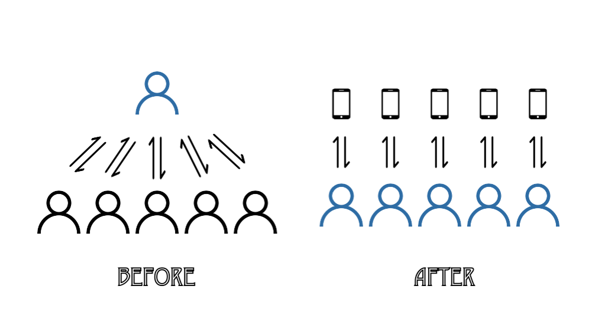
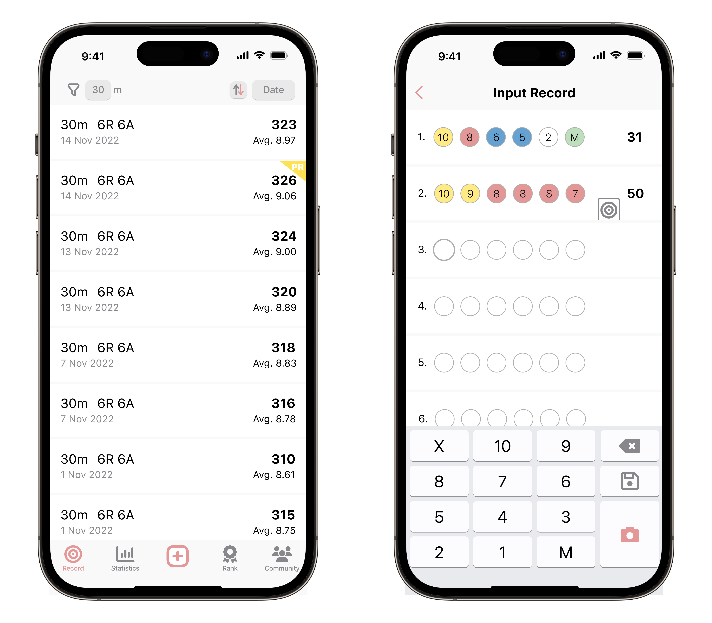
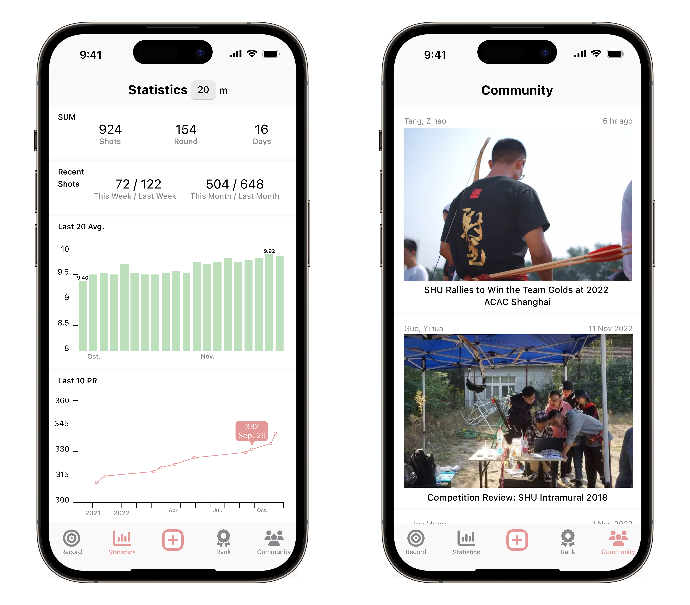
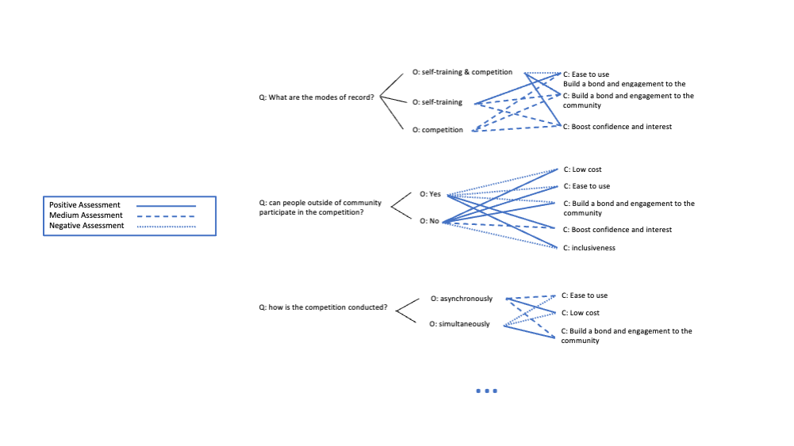

To run a traditional archery club can be difficult, especially during pandemic. Without the opportunity of communicating and competing face to face, members were less likely to participate. Therefore, how to better engage the members by collecting and releasing information at a lower cost is the problem I tried to solve here.
Solution
My solution is to build a mobile app, to realize better information management for both the organization managers and the members. It relieves the board members from arduous information collecting and delivering so that they can focus on holding interesting events and provide better training service. The data generating and disseminating work will be distributed to the users and the app. More importantly, the users, who have been unconsciously helping the manager record data, will probably become a real archery lover with the help of the app.
How?

The system will automatically generate a visualization of the users' progress on archery to highlight their milestones, which makes it more fun and way easier for the users to track their own progress and build perseverance. At the same time, their personal records will have the chance to be posted within the community, which will motivate the users and cultivate a positively competitive environment.


Process
Ethnography research
description: what is ethnography? why? how I combat with the disadvantage of being a professional?
personas
scenario
QOC

Paper Prototye
Digital Prototye
What I learned
Creating prototype is like coding, the concept of object and inheritance make it eaiser.
Even most basic visual design has direct affect on user experience, such as the right font size, color and layout of the elements.